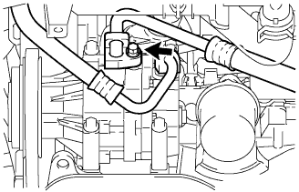
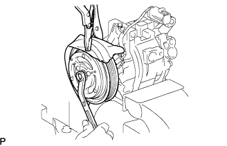
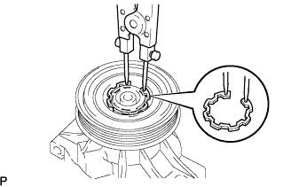
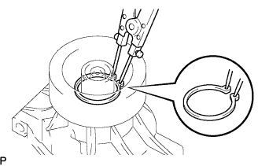

Cooler compressor ASSY removal |
| 1. Refrincer HFC-134A (R134A) extract |
Turn on the A/C switch.
Driving a cooler compressor for 5-6 minutes for about 1000R/min, circulating the refrigerant cycle in the refrigerant, and collecting the compressor oil remaining in each functional component into the cooler compressor as much as possible.
Stop the engine.
Connect the regeneration machine, extract the refrigerant gas.
| 2. The engine Anda cover RH is removed |
Remove two bolts and two screws.
Remove the nut and remove the engine undercover RH.
| 3. Fan & alternator V belt removed |
 |
Loosen the fixing bolt A and bolt B for adjustment.
Remove the V belt by loosening the tension of the V belt.
| 4. Cooler flavored sorting hose No.1 disconnection |
|  |
Remove the bolt and separate the Coolalifurizalant Sakusho Horse No. 1 from the Coolon Pretty Susa ASSY.
Remove the O -ring from the hose.
| 5. Cooler flirant discharge hose No.1 cut off |
Remove the bolts and separate the No. 1 Coolalifurizalanto Distchase Hose.
Remove the O -ring from the No. 1 cooler flirant day to the day.
| 6. Cooler compressor w/magnet clutch ASSY |
Cut the connector.
Remove the four bolts and remove the Coolon Pretty Sasa ASSY W/Magnetto Cracks ASSY.
| 7. Magnet clutch ASSY |
|  |
Fix the Coolon Pretty Sasa ASSY to the vise via an aluminum plate.
Use a vice priser to fix the magnets of the magnets.
Remove the mounting bolt of the magnets of the magnets.
Remove the magnets of the Magnetto Cracks and the Magnetto Kurachiwatsushiya (the number is not fixed for adjustment).
|  |
Use the SST to remove the snaptling from the cool conplesa ASSY.
Remove the magnets of the Magnets.
Remove the squeeze and separate the clamp and connector.
|  |
Use the SST to remove the snarpling and remove the magnets.